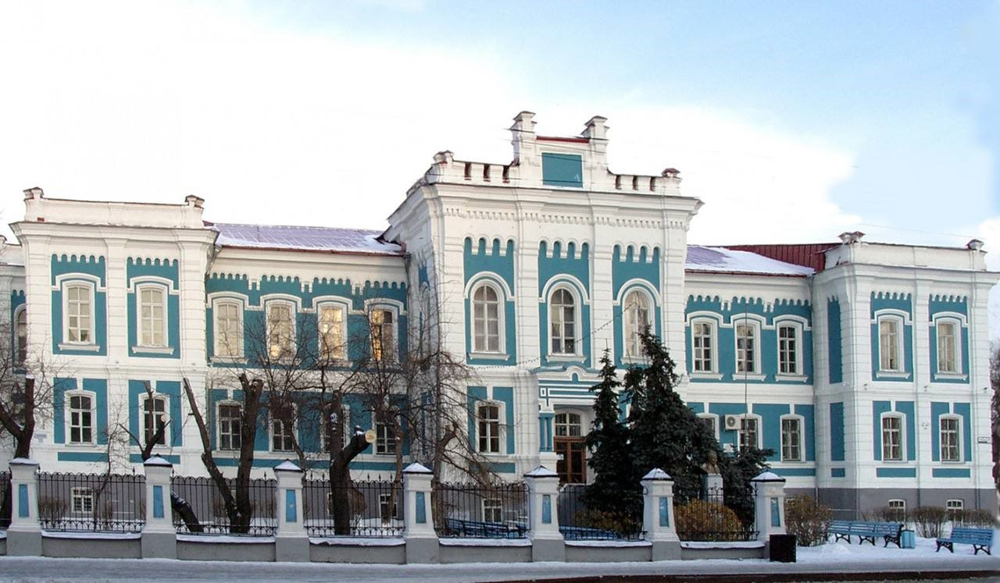
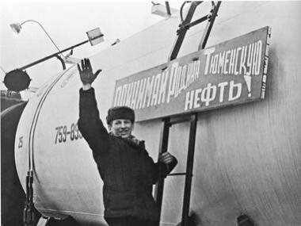

Интересные факты
1. Тюмень – первый русский город в Сибири. Он был основан в 1586 году. Ранее здесь располагался город Чинги-Тура, столица могущественного в XV–XVI веках Сибирского ханства.
2. В Тюмени среднегодовая продолжительность солнечного сияния составляет 2 066 часов. Для сравнения, в Москве — всего 1 582 часа. Здесь больше ясных дней, чем в Краснодаре.
3. Вопреки распространенному мнению, в столице нефтяного края нефти нет.
4. В городе построен самый большой в стране драматический театр (36 тысяч квадратных метров)
5. В тюменском регионе родились ученый Дмитрий Менделеев, приближенный к царской семье Григорий Распутин, автор «Конька-Горбунка» Петр Ершов и многие другие люди, оставившие след в истории..
6. Во время Великой Отечественной войны в город было эвакуировано тело Владимира Ильича Ленина – местом для хранения выбрали здание Тюменской сельскохозяйственной академии (ныне Государственного аграрного университета Северного Зауралья) по адресу Республики, 7)
7. В краеведческом музее Тюмени по адресу Ленина, 2 выставлен самый большой в России скелет мамонта. В 1885 году его нашел Иван Словцов, выдающийся деятель Тюмени, неподалеку от города, в деревне Решетниково.
8. Тюменская набережная единственная в России набережная, имеющая 4 уровня
 